JOURNAL COVERS
First journal cover...
Second one...
Third one...
Fourth one...
Fifth one...
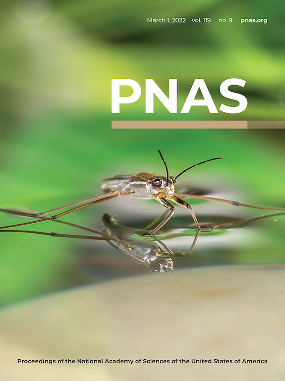

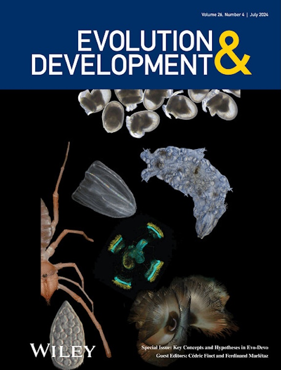
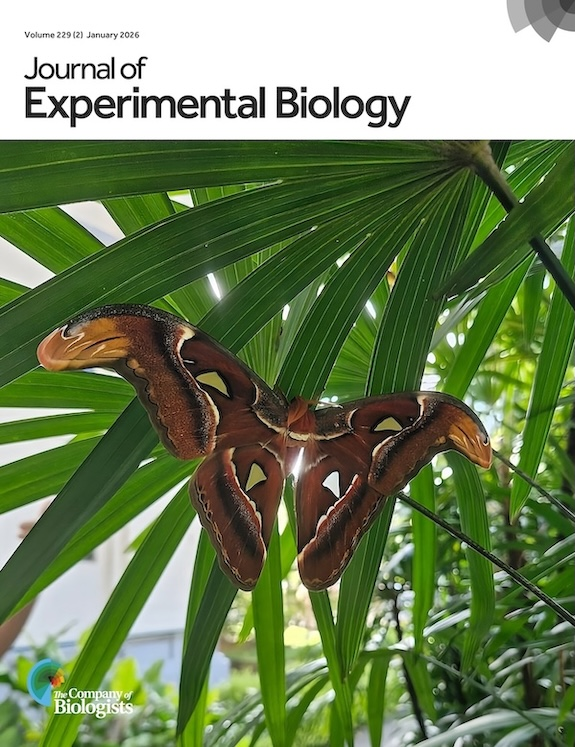
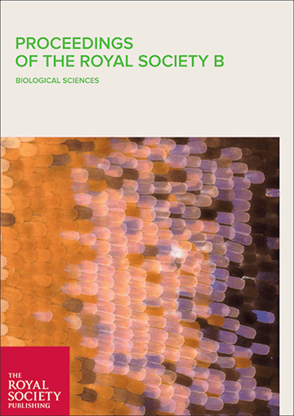
A PINCH OF ART...
Michele Banks, Drosophila Wing C (2018)
John Knuth, Fly Paintings Series (2013) -video-
Left: Vincent Van Gogh, Starry Night (1889). Right: The hydrodynamics of water strider locomotion, Lu et al. (2003).
Ruud Streefkerk, Common water strider (2015)
Sebastian Varghese, Water Striders (2015)
Adrija Ghosh, Are you an insect? (Published by Pratham Books)
Kuniyoshi Utagawa, Niwaka amembo (pun between nikawa ame “sudden rain” and amenbo “water strider”) (c. 1830)
Michelle Banks, Mutant Butterfly: Agraulis 2 (2018).
Gwenn Berry, Du beurre et des mouches (2021)
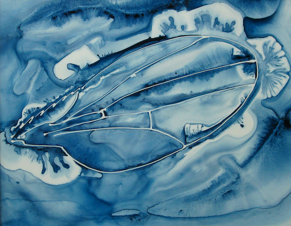
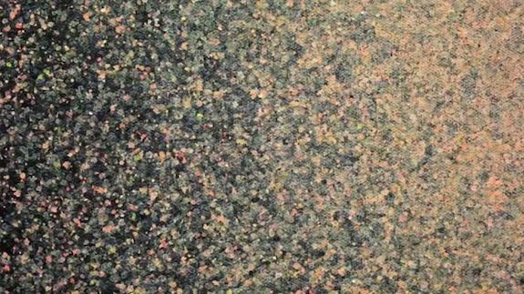
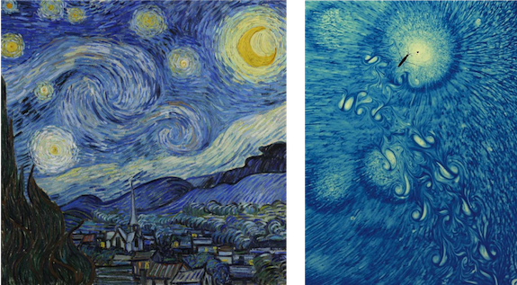
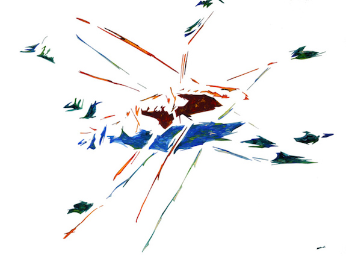
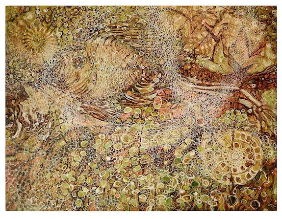
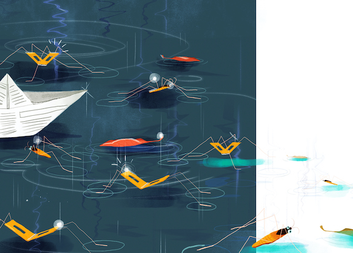
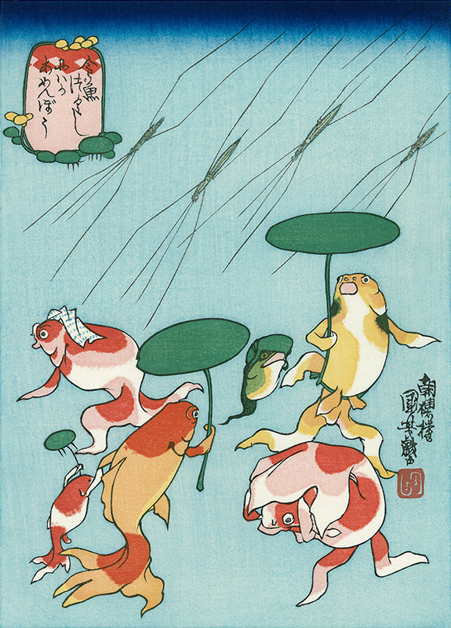
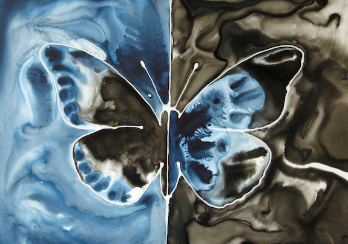
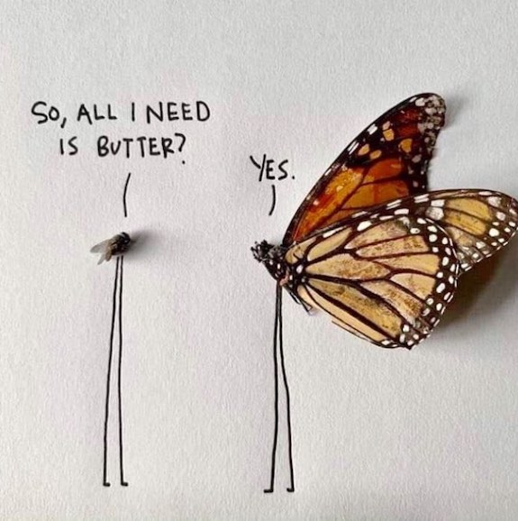
ONCE UPON A TIME...
Kagkujikan 2026, Nago Museum.
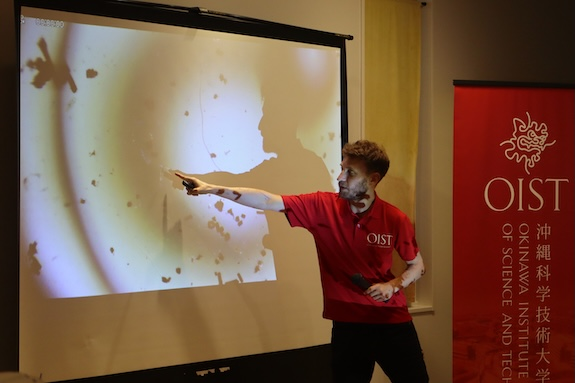
Invited talk in Tokyo Metropolitan University.
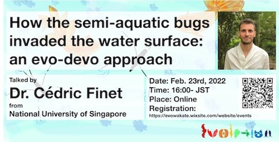
The Monteiro lab (2019). First row from left: Jun Yan Ng, Dean Tin Shuen Yew, Jurane Solano, Antónia Monteiro, Yi Ting Ter, Cédric Finet, Dantong Zhu, Maniza Huq, Tirtha Banerjee, Shen Tian, Gowri V.
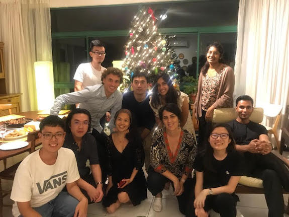
The Khila lab (2017). First row from left: David Armisén, Amélie Decaras, William Toubiana, Emília Santos; second row: Charlotte Bouleau, Séverine Viala, Cédric Finet, Mohammed Rabie, Antonin Crumière, Aidamalia Vargas-Lowman, Augustin Le Bouquin, Pauline Joncour; third row: François Bonneton, Abdou Khila.
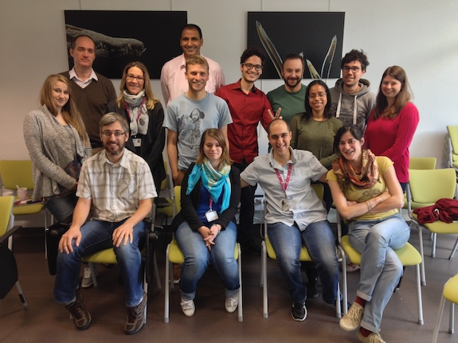
Souvenir from Roscoff (CJM "Emergence and evolution of developmental patterns", April 2012). Left row from back: Nicolas Denans, Priti Roy, Cédric Finet; right row from back: Qiyan Mao, David Caballero Vila, Ayan Ray, Flavien Caraguel.
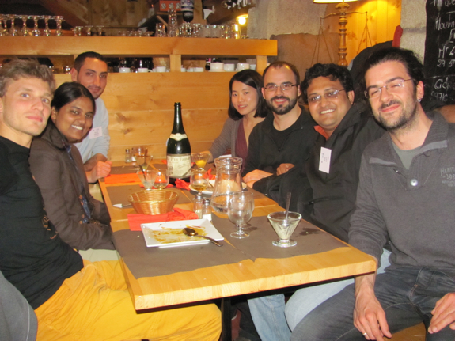
The First and Founding Meeting of the European Society for Evolutionary Developmental Biology (Prague, Czech Republic) - 2006 -
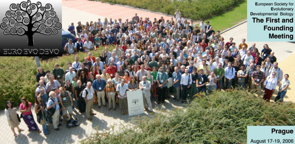